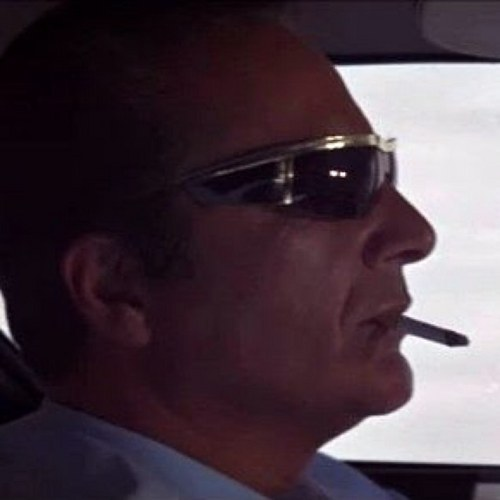

Rocky Scaletta @rscaletta • January 3, 2023 • …
How sure are we that this “Cheese Bro” is even a real person?
“The January 6 committee identifies a little known pro-Trump attorney as being the original architect of the legally dubious fake electors plan: Kenneth Chesebro.”